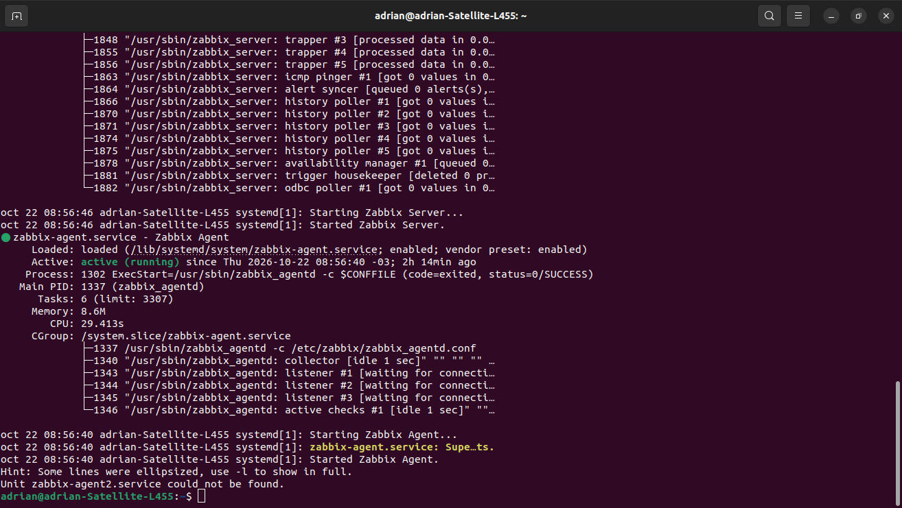
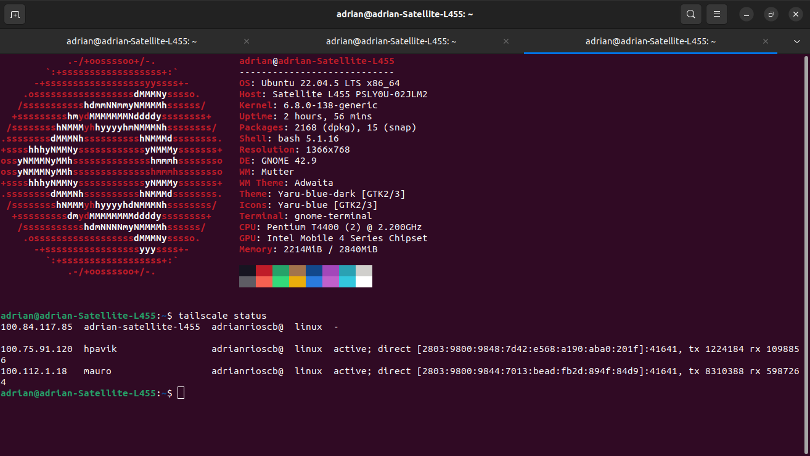

Instalación y configuración del agente Zabbix en Ubuntu¶
1. Introducción¶
El agente Zabbix permite recopilar información sobre el estado y el rendimiento de un equipo Ubuntu y enviarla al servidor Zabbix para su monitoreo.
Entre las métricas que se pueden obtener se encuentran el uso de CPU, memoria RAM, espacio en disco, disponibilidad del sistema y otros parámetros del equipo.
En este laboratorio, el agente se utiliza para supervisar equipos Ubuntu y enviar información al servidor Zabbix mediante la conexión privada de Tailscale.
2. Instalación del agente¶
2.1. Actualización de los paquetes¶
Antes de instalar el agente, actualizamos el índice de paquetes disponibles en los repositorios configurados en Ubuntu.
sudo apt-get update
Explicación:
sudo: ejecuta el comando con privilegios de administrador.apt-get: administra los paquetes del sistema.update: actualiza el índice de paquetes disponibles.
2.2. Instalación del agente Zabbix¶
Instalamos el agente tradicional mediante el siguiente comando:
sudo apt-get install zabbix-agent -y
Explicación:
apt-get install: instala el paquete especificado.zabbix-agent: identifica el paquete del agente Zabbix.-y: confirma automáticamente las preguntas habituales del instalador.
El agente permite recopilar métricas del sistema operativo para que el servidor Zabbix pueda supervisar el equipo.
3. Configuración del agente¶
3.1. Edicion del archivo de configuración¶
Abrimos el archivo de configuración del agente:
sudo nano /etc/zabbix/zabbix_agentd.conf
Este archivo contiene los parámetros necesarios para establecer la comunicación entre el agente y el servidor Zabbix.
3.2. Configuración de los parámetros principales¶
Buscamos y configuramos los siguientes parámetros, reemplazando los valores de ejemplo por los correspondientes al equipo monitoreado.
Server=100.84.117.85
ServerActive=100.84.117.85:10051
Hostname=ubuntu-agent
Explicación:
Server: dirección del servidor autorizado para realizar comprobaciones pasivas.ServerActive: dirección IP y puerto del servidor al que el agente solicita comprobaciones activas.Hostname: nombre técnico con el que el agente se identifica ante Zabbix.
En este laboratorio, 100.69.187.108 corresponde a la dirección Tailscale del servidor Zabbix. El valor ubuntu-agent es un ejemplo y debe coincidir exactamente con el nombre técnico registrado en la interfaz web de Zabbix.
Para guardar los cambios en Nano, presionamos Ctrl + O, confirmamos con Enter y salimos con Ctrl + X.
4. Inicio y habilitación del servicio¶
4.1. Reinicio del agente¶
Después de modificar la configuración, reiniciamos el servicio para aplicar los cambios:
sudo systemctl restart zabbix-agent
4.2. Verificación del estado¶
Comprobamos que el agente esté ejecutándose correctamente:
sudo systemctl status zabbix-agent

El estado esperado es:
Active: active (running)
Este resultado indica que el servicio está activo. Sin embargo, todavía es necesario verificar la comunicación con el servidor y la recepción de métricas.
4.3. Habilitación del inicio automático¶
Configuramos el agente para que se inicie automáticamente cuando arranque Ubuntu:
sudo systemctl enable zabbix-agent
De esta manera, el servicio podrá iniciarse automáticamente durante los siguientes arranques del sistema operativo.
5. Verificación de la conectividad¶
5.1. Comprobación de Tailscale¶
Verificamos que el equipo esté conectado a la VPN:
tailscale status

Este comando muestra los dispositivos visibles en la red Tailscale.
5.2. Comprobación del puerto del servidor¶
Verificamos que el equipo pueda establecer una conexión TCP con el puerto 10051 del servidor:
nc -zv 100.84.117.85 10051
Explicación:
nc: permite comprobar conexiones de red.-z: verifica el puerto sin enviar datos de aplicación.-v: muestra información detallada del resultado.100.69.187.108: dirección Tailscale del servidor Zabbix.10051: puerto habitual de comunicación con el servidor para comprobaciones activas.
Si el comando nc no está instalado, se puede instalar mediante:
sudo apt-get install netcat-openbsd -y
Una conexión exitosa indica que el puerto es accesible, pero no garantiza por sí sola que el agente esté correctamente configurado.
6. Registro del equipo en la interfaz web de Zabbix¶
Una vez instalado y configurado el agente, ingresamos a la interfaz web de Zabbix y registramos el equipo.
| Parámetro | Valor |
|---|---|
| Host name | agentwin11 |
| Visible name | Ubuntu22.04 |
| Agent interface IP | 100.84.117.85 |
| Port | 10050 |
| Template | Linux by Zabbix agent |
- Accedemos a Data collection → Hosts.
- Seleccionamos la opción para crear un nuevo host.
- Asignamos un nombre técnico que coincida con el parámetro
Hostname. - Si utilizamos comprobaciones pasivas, agregamos una interfaz de tipo Agent con la IP Tailscale del equipo Ubuntu y el puerto
10050. - Vinculamos una plantilla compatible, como
Linux by Zabbix agent. - Guardamos la configuración.
Si se utilizan únicamente comprobaciones activas, la configuración de la interfaz para comprobaciones pasivas puede no ser necesaria. En ambos casos, el nombre técnico debe coincidir con el configurado en el agente.
7. Verificación de las métricas¶
Para comprobar que el agente está enviando información:
- Ingresamos en Monitoring → Latest data.
- Seleccionamos el host Ubuntu.
- Revisamos las métricas disponibles.
- Comprobamos que los valores se actualicen y que no existan errores de comunicación.
Si las métricas no aparecen, debemos revisar el nombre del host, la dirección del servidor, el estado del agente, la conexión de Tailscale y los registros del servicio.
Para consultar los últimos registros del agente, ejecutamos:
sudo journalctl -u zabbix-agent -n 50 --no-pager
Este comando permite identificar errores de configuración o problemas de comunicación.
8. Consideraciones de seguridad¶
- Utilizar Tailscale para establecer una conexión privada entre el agente y el servidor.
- Evitar exponer los puertos de Zabbix directamente a Internet.
- Restringir el acceso al puerto
10050cuando se utilicen comprobaciones pasivas. - Mantener el agente actualizado y revisar periódicamente sus registros.
- Utilizar un nombre técnico único para cada equipo monitoreado.